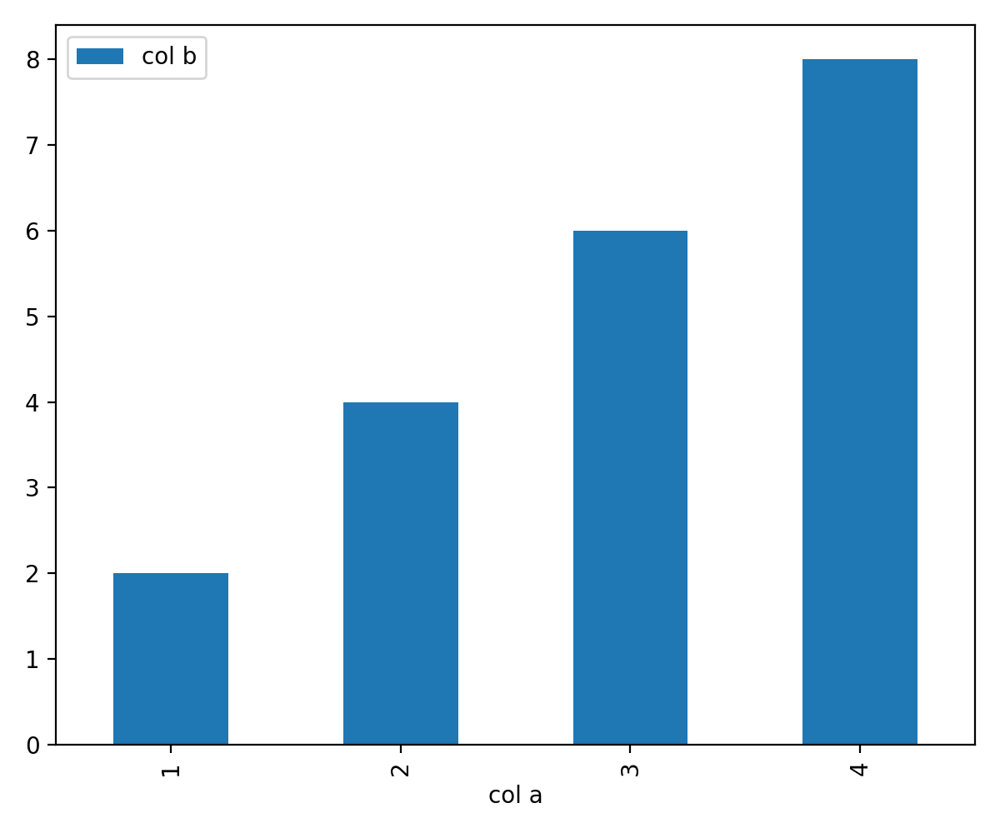

Pandas
O dataframe da biblioteca pandas possui o método plot que gera gráficos de barra com o parâmetro kind='bar' ou kind='barh':
import pandas as pd
df = pd.DataFrame({'col a':[1, 2, 3, 4],
'col b':[2, 4, 6, 8]})
df.plot(x='col a', y='col b', kind='bar')
O trecho de código acima gera o seguinte gráfico:
Alternativamente, um gráfico com barras horizontais é produzido alterando o parâmetro kind para kind='barh'.